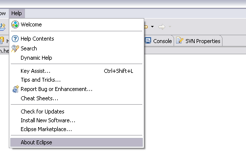
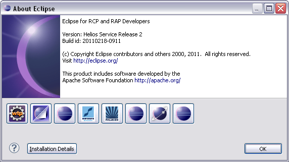
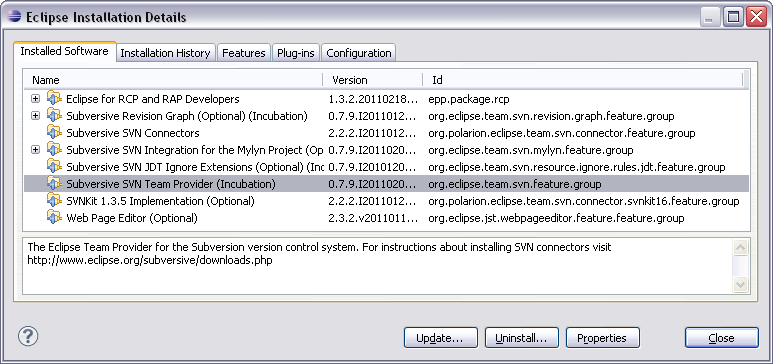

Subversive management instructions
After Subversive is installed you can manage it using the plug-in management features. Subversive can be disabled, enabled, uninstalled or updated. In order to do so you should:
-
Start Eclipse and select menu item 'Help > About Eclipse', then press 'Installation Details' button.

-
Next you'll see the dialog where you can select Subversive plug-in and then update, uninstall it or simply check its version information.
